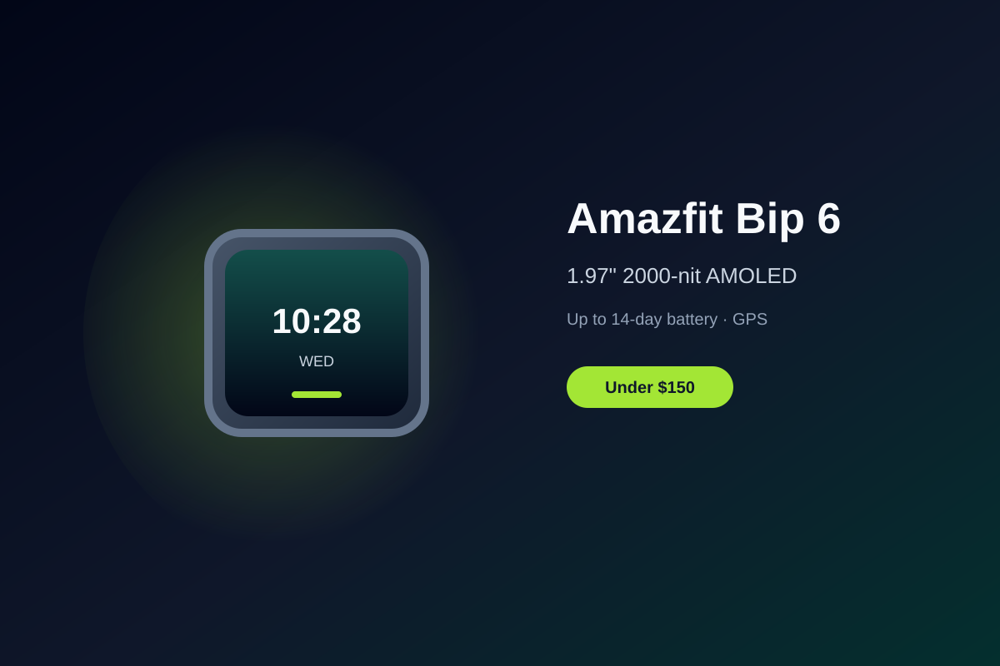

Amazfit Bip 6 Review: Large AMOLED and Two-Week Battery Under $150
The Amazfit Bip 6 delivers a roomy 1.97-inch AMOLED screen, multi-week battery life, built-in GPS, and offline maps in a lightweight package that regularly sells well under $100.
Budget smartwatches keep improving, and the Amazfit Bip 6 stands out by packing a large, bright display and genuinely useful outdoor features into a price that often lands between $70 and $85. It is built for people who want reliable fitness tracking and notifications without daily charging or a premium price tag.
The 1.97-inch AMOLED display is the clear highlight. Peak brightness reaches up to 2,000 nits, so the screen stays readable in strong sunlight, and the larger real estate makes glanceable metrics and maps easier to use than on smaller budget watches. Zepp OS keeps navigation simple with touch input and a physical button for quick access to workouts.
Battery life is another major strength. Amazfit rates the watch for up to 14 days of typical use, and real-world results with continuous heart-rate and sleep tracking commonly land in the 8–12 day range. That endurance is practical for everyday wearers who prefer to charge once a week or less rather than every night.
Fitness tools cover the essentials well: dual-band GPS with multiple satellite systems, 140+ sport modes, heart rate, SpO2, and sleep insights. Offline maps with turn-by-turn directions are a standout feature at this price, letting you leave the phone behind on runs or hikes. The Zepp companion app surfaces readiness scores and trends without unnecessary complexity.
If you want a lightweight, capable smartwatch that prioritizes display size, multi-day battery, and core GPS/fitness features over a full app store or advanced health sensors, the Amazfit Bip 6 is a strong value under $150. It delivers reliable daily utility with a design that does not feel compromised.
Key Takeaways
- Price Range: ~$70 – $85 (typical Amazon pricing)
- Display: 1.97-inch 2000-nit AMOLED
- Battery: up to 14 days typical use
- Features: Built-in GPS, offline maps, 140+ sports, Zepp OS